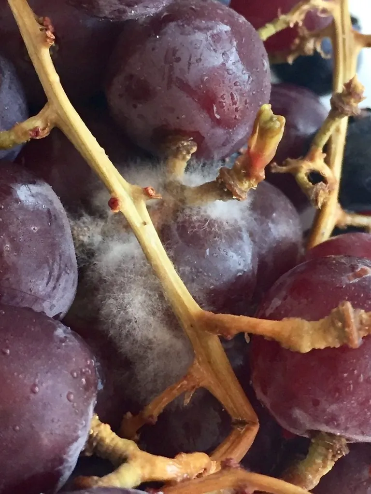

真菌 · 真菌界
灰葡萄孢 Botrytis cinerea

灰葡萄孢引起植物的灰霉病，病部覆盖灰色绒毛状霉层，可危害葡萄、草莓、番茄等多种作物，是常见的植物病原菌。
- 分类
- 门子囊菌门纲锤舌菌纲目柔膜菌目科核盘菌科属葡萄孢属
- 栖息环境
- 葡萄、草莓、番茄等多种植物的花、果与衰老组织，低温高湿时流行
- 地理分布
- 世界性分布，温室与大田栽培区普遍发生
- 保护级别
- 暂无评估（植物病原真菌）
物种志
灰葡萄孢是子囊菌门核盘菌科的真菌，菌丝有隔膜，分生孢子梗细长、分枝，顶端簇生卵形的分生孢子，呈灰褐色，形成灰色绒毛状霉层。它常从伤口、衰老组织或花瓣侵入，在低温高湿条件下容易流行，病部软腐并覆满灰色霉层。有性阶段形成菌核，菌核黑色、坚硬，可越冬。
灰葡萄孢是世界性的植物病原菌，能侵染葡萄、草莓、番茄、黄瓜、花卉等 200 多种植物，引起灰霉病，造成果实腐烂和产量损失。它喜低温高湿，温室和大棚栽培中尤为严重，是保护地蔬菜和果树的重要病害。防治上主要依靠通风降湿、清除病残体、合理使用杀菌剂；同时，灰葡萄孢也是研究植物病原真菌致病机制和抗药性的重要模式材料。
形态与习性
- 寄主葡萄、草莓、番茄、黄瓜等 200 多种植物
- 病害灰霉病，病部生灰色霉层
- 流行条件低温高湿，温室中严重
- 菌核黑色坚硬，可越冬
- 防控通风降湿、清除病残、药剂防治
- 特点常见且易产生抗药性
趣味知识
- 灰霉病的病部会长出一层灰色绒毛状霉层，所以叫灰霉病。
- 灰葡萄孢能侵染 200 多种植物，葡萄、草莓、番茄都容易受害。
- 它喜欢低温高湿，温室大棚里尤其容易暴发。